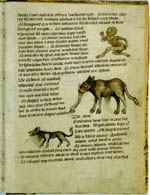

Herbarium, gevolgd door Sextus Placitus Papyriensis, De medicamentis ex animalibus (excerpt). Latijn. Handschrift op perkament, 57 ff., 220 x 165 mm. Waarschijnlijk Noord-Frankrijk, circa 1300. -- (BPL 1283)
Het medicinaal Herbarium van
Pseudo-Apuleius, voorafgegaan door Antonius Musa (zie nummer 95),
werd al heel vroeg gecombineerd met het hier getoonde werkje van Sextus Placitus, een
beknopte handleiding die aangeeft hoe uit dieren geneesmiddelen te bereiden zijn. Ook hier
betreft het een werkje uit de late Oudheid, waarvan maar heel weinig bekend is. De
illustraties in dit voor de praktijk bedoelde boekje, dat ooit aan de abdij Berne in
Brabant behoorde, zijn in tegenstelling tot de planten niet noodzakelijk om de dieren te
herkennen. Volgens een inscriptie op folio 50v werd de tekst afgeschreven door
‘Henricus dictus le Galoys de Wallia oriundus’.
Op de openliggende bladzijden, folia 56v-57r, staan achtereenvolgens de leeuw, de stier,
de olifant en de hond beschreven, alle dieren die iedereen in de dertiende eeuw, zo niet
uit eigen aanschouwing, dan toch tenminste al van afbeeldingen kende. Het aapje, dat in
een afwijkende houding is voorgesteld, hoort strikt genomen niet in deze reeks thuis, want
de tekst behandelt hier alleen de stier; er wordt alleen opgemerkt dat stieregal een goed
geneesmiddel is tegen apebeten. Mogelijk is het aapje, in die tijd een geliefd speeldier,
daarom een later insluipsel in de reeks. Dat zou de afwijkende houding, waarin het is
voorgesteld, kunnen verklaren.
Het is interessant de olifant te vergelijken met hetzelfde dier in nummer 82. In beide gevallen is het beeld weinig realistisch, wat niet te verwonderen is: men kende het dier immers alleen uit de literatuur. Hier valt als natuurlijk trekje vooral de geleedheid van de slurf op.
Literatuur
- [P.C. Molhuysen], Codices Bibliothecae Publicae Latini. Lugduni Batavorum 1912 ( = Bibliotheca Universitatis Leidensis Codices manuscripti. III), p. 166-167.
- Vergelijk: Heide Grape-Albers, Spätantike Bilder aus der Welt des Arztes. Wiesbaden 1977, vooral p. 29-32.
| vorige pagina | top pagina |